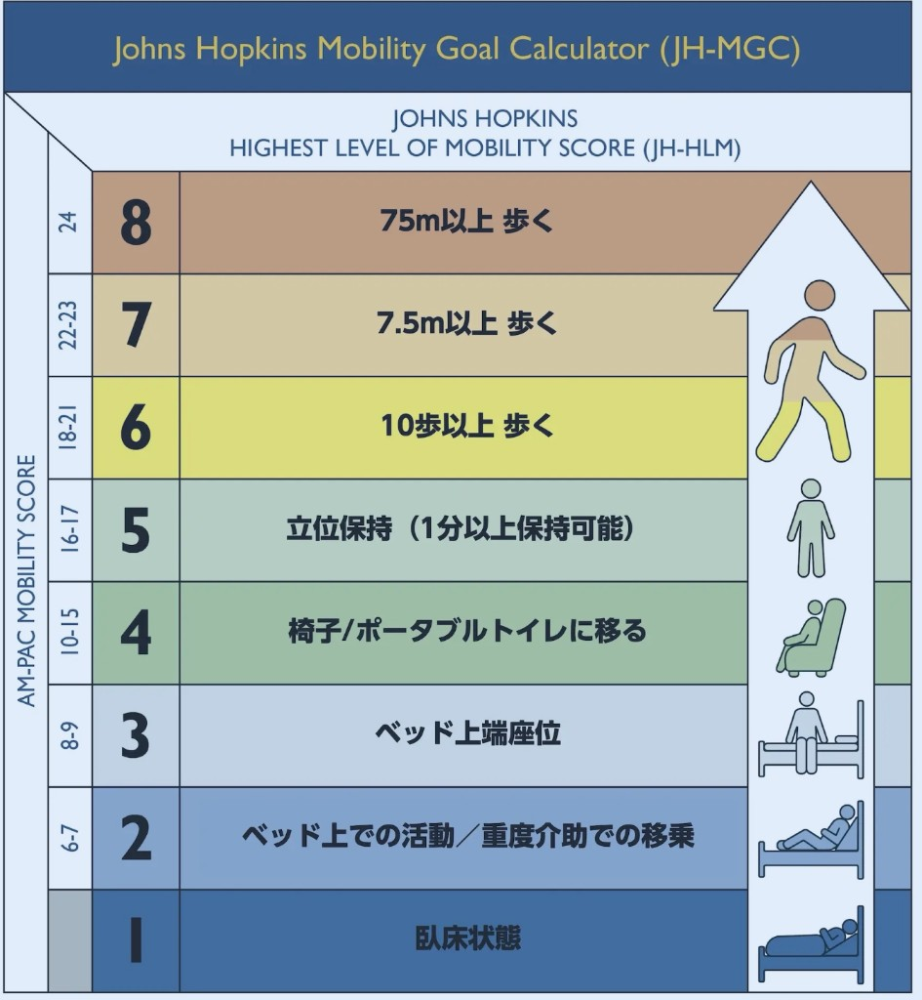
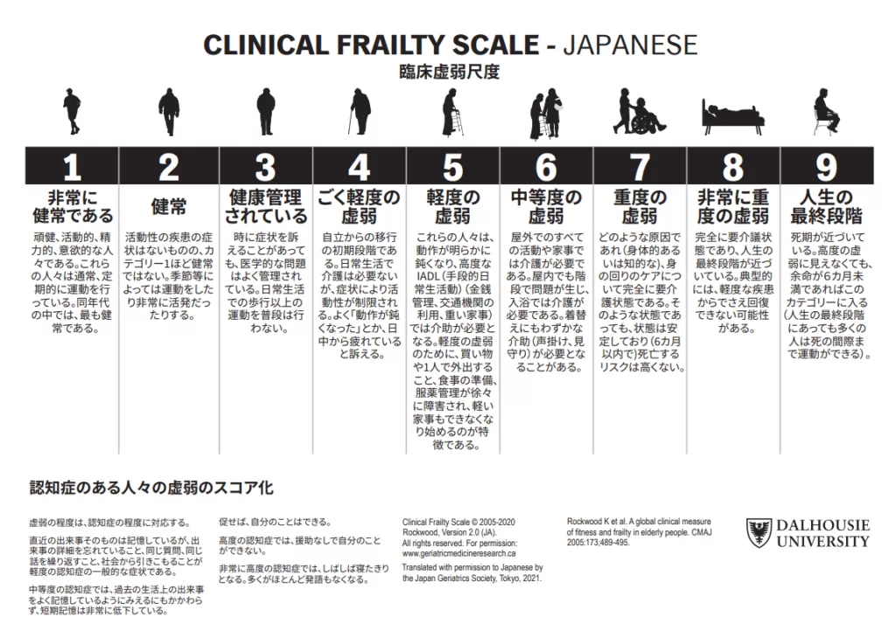
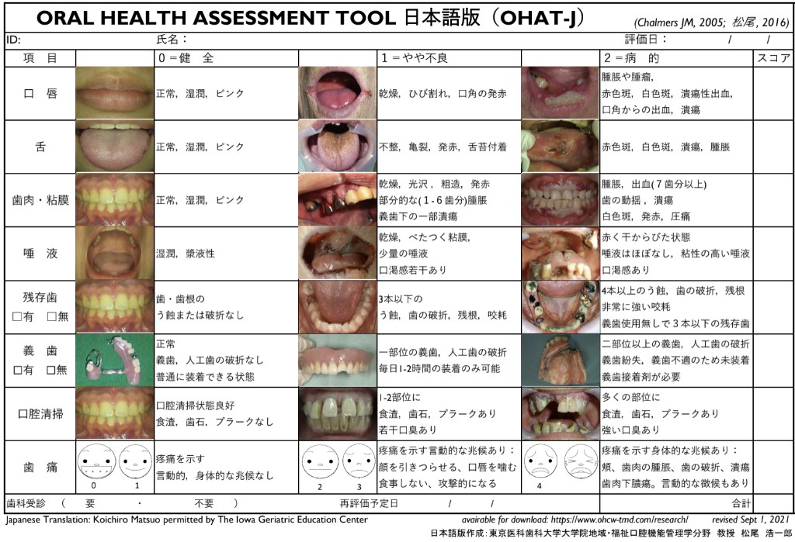

What Matters
今のケアで辛いこと・してほしくないことを、本人の言葉で拾う
「管が当たって眠れない、抜いてほしい、とのこと。今日は不要ラインを整理する」
▼ 質問・記録の要点
質問: 「今のケアの中で辛いこと、してほしくないことは何ですか？」
記録: 本人の言葉をそのまま残す（要約しすぎない）。
—月は —人 にケアを届けることができました
毎日多職種で板中版4Mをセットで回す。スコアで終わらせず、今日やる一手までみんなで決める。
目安 10:30／約30分。中央テーブルでまとめてカンファ → ベッドサイド。司会は専従医。
医師の運用手順は Notion。
今のケアで辛いこと・してほしくないことを、本人の言葉で拾う
質問: 「今のケアの中で辛いこと、してほしくないことは何ですか？」
記録: 本人の言葉をそのまま残す（要約しすぎない）。
高齢者に不要・有害になりやすい薬を見つけ、減薬／中止／維持を決める
根拠: 日本老年医学会「高齢者の安全な薬物療法ガイドライン2025」
BZD／オピオイド／抗コリン／睡眠・鎮静（市販含む）／筋弛緩／三環系／抗精神病薬／気分安定薬／その他
せん妄・意識・疼痛・睡眠を見逃さず、今日の対応まで落とす
| JCS / GCS | 意識レベル |
|---|---|
| CAM-ICU | ICU/HCU向けせん妄スクリーニング |
| ICDSC | せん妄チェックリスト |
| NRS / CPOT / BPS | 疼痛 |
| 睡眠状況 | 夜間の経過 |
陽性・悪化時は、水分・オリエンテーション・感覚補助（眼鏡・補聴器・義歯）・非薬物的睡眠・ハイリスク薬見直しをセットで検討。
今日どこまで動けたか（JH-HLM）を共有し、離床の一手を決める
| 1 | 臥床のみ |
|---|---|
| 2 | ベッド上で体動 |
| 3 | 端座位 |
| 4 | 椅子への移乗 |
| 5 | 1分以上の立位 |
| 6 | 10歩以上歩行 |
| 7 | 約7.6m以上歩行 |
| 8 | 約76m以上歩行 |
できる最大ではなく、実際にやった最高を記録する。

| 1 | 非常に健常 |
|---|---|
| 2 | 健常 |
| 3 | 健康管理されている |
| 4 | ごく軽度の虚弱 |
| 5 | 軽度の虚弱 |
| 6 | 中等度の虚弱 |
| 7 | 重度の虚弱 |
| 8 | 非常に重度の虚弱 |
| 9 | 人生の最終段階 |
入院前のベースライン。日々の離床（JH-HLM）と混同しない。

目標kcal・達成率・食形態を見て、栄養の一手を決める
| 目標kcal・達成率・食形態 | 毎回の必須可視化（補食・静脈栄養などのアクションにつなげる） |
|---|---|
| MNA-SF / GLIM | 低栄養の評価 |
| RFS | 再栄養症候群リスク（高リスク時は P / Mg / K を監視） |
| OHAT | 口腔 |
| 排泄状況 | 便秘・下痢など食事と連動する問題 |

氏名・患者ID・ベッド番号は書かない
読み込み中…